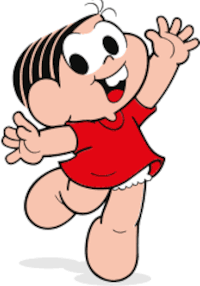
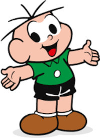

Listas e mais listas.
Lista de coisas a fazer hoje
- Levantar cedo
- Tomar café
- Tomar banho
- Estudar
- Almoçar
- Lavar o carro
- Ir no mercado
- Jantar
- Dormir
Lista de compras do mercado
- Arroz
- Feijão
- Batata
- Alface
- Farinha de trigo
- Sal
- Presunto
- Pão de forma
Melhores plataformas de jogos e pontos positivos / negativos
- PC
- Valor mais acessível a jogos
- Acesso a gamepass para acesso a muitos jogos
- Caso invista no PC, não haverá uma nova geração
- Melhor controle por mouse e teclado
- Investimento inicial alto, para conseguir montar setup
- Playstation 4
- Jogos exclusivos muito bons
- Maior acesso a jogos de multijogador local
- Jogos e console com valor muito elevado
- Xbox series S
- Alguns jogos exlusivos bons
- Maior acesso a jogos de multijogador local
- Acesso a gamepass para acesso a muitos jogos
Lista com sites aleatórios
Lista melhores personagens da Turma da Mônica
- 
- 